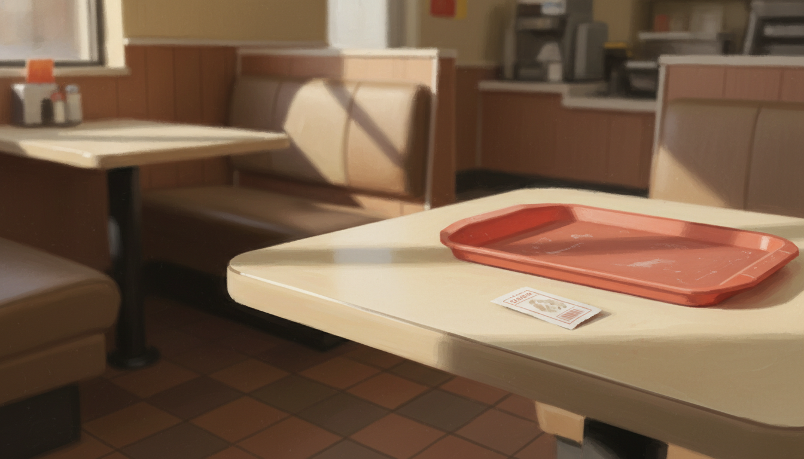

マクドナルドで、隣のご婦人にハンバーガー券を渡した日

マクドナルドで、ハンバーガー無料券を渡した日
5月8日の午後、福岡のマクドナルドにいた。
40日ぶりに走った日だった。6キロ走って、2キロ歩いて、近くのカフェで思考整理して、その帰り道。新緑と青空と風と、太陽の暖かさを順番に受け取って、まだ体のどこかが緩んだままだった。
席はだいたい埋まっていた。サラリーマンの一人客、勉強しに来た学生、ベビーカーを横に置いた母親。トレーの上のポテトの匂いと、子どもの泣き声と、注文を呼ぶ機械音が混ざる、よくある昼下がりの空気。
僕の隣の席に、年配のご婦人が座っていた。
ひとりだった。前にはコーヒーが一杯と、紙ナプキンがきちんと畳んで置いてあった。背筋がすっと伸びていて、上品な格好をしていた。誰かを待っているような気配でもなく、ただゆっくり時間を過ごしている、そんな佇まいだった。
僕の財布には、いつだったか何かのキャンペーンでもらったハンバーガーの無料券が入っていた。使い忘れていたわけではない。なんとなく、自分で使う気にならずに、ずっと持っていたものだった。
「あの、これ、使われませんか」
そう言って、券を差し出していた。あらかじめ考えていた言葉ではなかった。手が先に動いていた。
ご婦人は少し驚いたあと、丁寧に頭を下げて、「ありがとうございます」と小さく笑った。
それだけのことだった。
席を立って、外に出て、自転車にまたがって、しばらく走ったあとに、信号で止まったタイミングでふと気づいた。
——あ、自分、受け取って、渡す側になってる。
自信を渡してくれた人がいた
ふと、高校のバイト先のことを思い出した。
宮崎の田舎町のガソリンスタンドだった。十代後半、自分にまったく自信のなかった頃、初めて働いた場所がそこだった。
社長と、その息子。当時の僕にとっては、ふたりとも大人で、遠くて、ちょっと怖い人たちだった。けれど、最初に「自分に自信を与えてくれた」のは、まちがいなくこのふたりだった。
何かを大きく褒められた記憶があるわけじゃない。具体的なセリフも、もうほとんど覚えていない。ただ、給油の手順を覚えて、お釣りを渡して、車に頭を下げて、そういう小さい所作のひとつひとつを、自分なりにちゃんとできた日があって、その繰り返しの中で、少しずつ自分のことを嫌じゃないと思えるようになっていった。
それから、もうひとつ、あの場所で教わったことがある。
謝罪、だった。
何かをこぼした日、釣り銭を間違えた日、お客さんを怒らせてしまった日。社長と息子は、どう謝るのかをそばで見せてくれた。背筋を伸ばして、まっすぐに目を見て、いいわけをせずに、ただ「すみませんでした」と言う。その姿を、何度も横で見ていた。
人生で大切な「謝罪」を教えてもらった場所だった、と今でも思う。
当時の息子はもう現社長で、年齢を数えると70を超えている。最近、その人にもう一度会いに行きたい、ご飯を食べに行きたい、と日記に書いた。会いに行かないと、と何度も書いた。
——自信のなかった高校生に、自信を渡してくれた人たちがいた。 ——いいわけしないで謝るというやり方を、横で見せてくれた人たちがいた。
5月8日の午後、マクドナルドで券を差し出した手の話に戻すと、あの手の動きは、僕がひとりで作ったものじゃなかった。
あの頃の自分に、誰かが先に渡してくれていた。だから、何十年か経った今、自分の財布から券を一枚抜いて、隣のご婦人にすっと差し出すことができた。それだけのことだった気がする。
容器が満ちて、こぼれただけ
5月8日の午後、券を差し出したとき、何かの戦略があったわけじゃない。
たぶん、走って、新緑を浴びて、太陽の暖かさを受け取って、自分の中が余白になっていただけだった。受け取ったものが満ちていて、そのうちの一滴が、隣の人にこぼれていったような感覚に近い。
考えてみると、ここ最近、似たようなことが他にもあった。
店長との面談で、自分が日記で掴んだ言葉を、知らないうちに相手に手渡していたこと。アルバイトの子に記事を見せたら、技術じゃなくて内容のほうに反応されたこと。会議の司会をしながら、承認欲求が一瞬出てきて「自分らしくないな」と思って、するっと手放せたこと。
どれも、頑張って渡したわけじゃない。
1年半、9ヶ月、半年、3ヶ月。区切り方はいろいろあるけれど、ただ毎日、ジャーナリングを続けて、ジムに行って、瞑想して、AIと話して、走って、書いて。受け取り続けて、それを内側で何度もこねくり回しているうちに、いつのまにか少しずつ、はみ出すようになっていたんだと思う。
技を覚えたわけじゃなかった。ただ、容器が満ちて、こぼれただけ。
ハンバーガーの無料券は、500円もしない金額のものだった。喜ばれたかどうかも、ご婦人がそのあと使ったかどうかも、わからない。
それでも、自転車を漕ぎながら気づいたあの感覚は、今でも残っている。
受け取る側でしかなかった自分が、いつのまにか、渡せる側にも立っていた、という事実だけが、静かにそこにあった。
#日記 #ジャーナリング #エッセイ #note #毎日note #毎日更新 #続けること #内省 #自己観察 #気づき #書く #ひとりごと #ライフログ #雑記 #思考整理 #感情整理 #自分メモ #ものづくり #創作 #物書き #40代 #40代の生き方 #個人開発 #ひとり起業 #会社員 #サラリーマン #フリーランス #副業 #店長 #マネジメント #組織 #店舗運営 #人を育てる #対話 #コミュニケーション #人間関係 #家族 #子育て #メンター #上司部下 #生き方 #価値観 #誠実 #迷い #選択 #決断 #覚悟 #待つ #観察 #自己理解 #自己一致 #習慣 #瞑想 #ジム #運動 #読書 #執筆 #朝の時間 #夜の時間 #五月 #初夏 #福岡 #九州 #心の動き #日常 #暮らし #淡々 #小さな気づき #AI #AkariLab #マクドナルド #ハンバーガー券 #ご婦人 #見知らぬ人 #小さな親切 #街の風景 #地方都市 #高校時代 #バイト #ガソリンスタンド #自信 #謝罪 #社長と息子 #受け取る側 #渡す側 #世代をつなぐ #敬意 #年配の人 #ささやかな贈り物 #ふらっと #走った帰り #新緑のカフェ #技じゃない #容器が満ちて #こぼれる #貰い続けた人生 #返していく #町の中で #店長の影響 #ジャーナリングの効果